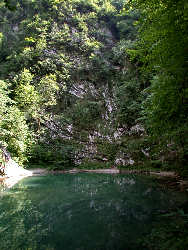
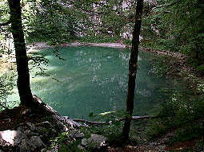

Divje Jezero
Savage Lake
Useful Information
|  |
| Image: karst spring with faulted limestones above. |
| Location: | South of Idrija. From Idrija south on road to Godovic. Turn right at turnoff to Idrijska Bela, across a bridge into a narrow gorge. Parking after a few hundred meters. Signposted. |
| Open: | no restrictions [2006] |
| Fee: | free [2006] |
| Classification: | |
| Light: | n/a |
| Dimension: | L=160m, VR=83m, A=320m asl. |
| Guided tours: | |
| Photography: | |
| Accessibility: | |
| Bibliography: | |
| Address: | |
| As far as we know this information was accurate when it was published (see years in brackets), but may have changed since then. Please check rates and details directly with the companies in question if you need more recent info. |
|
| Last update: | $Date: 2015/11/20 13:22:32 $ |
History
| 1957 | explored by Idrijca divers. | |
| 1962-1972 | explored by Idrijca divers. | |
| 1967 | declared a Natural Monument. | |
| 1980-1982 | explored by Idrijca divers. |
Description
|  |
| Image: the green water of the spring. |
Divje Jezero is a huge deep blue karst spring, the emergence of the Jezernica river, which flows after only 50m into the Idijca river. The spring is a collapse doline, the end of a cave system which drains the mountains to the south. The cave below the lake goes down vrather steep. It is until today explored for 160m, going down 83m deep. The big depth is an enormous problem for human divers and so exploration has come to an end.
The cave was formed along a tectonic fault, which is visible in the rock face behind the spring. But this is not only a geologic site. The flora and fauna around the spring is exceptional and protected. There are also Olms (Proteus anguinus) living in the cave, which are sometimes transported out by floods. At normal times the fresh water is full of trout.
The lake is a famous tourist destination, although it is off the major tourist routes. It is primarly visited by Solwenian tourists. The spring is only a few meters from the road and the parking lot. Trails on both sides of the Jezernica lead to the spring and around. The trail is very bad in places, but it is possible to reach the lake without problems. For a complete round trip we recommend good shoes.
 Search Google for "Divje Jezero"
Search Google for "Divje Jezero" Google Earth Placemark
Google Earth Placemark Divje jezero - Wikipedija, prosta enciklopedija
(
Divje jezero - Wikipedija, prosta enciklopedija
( )
) Divje jezero
(
Divje jezero
(